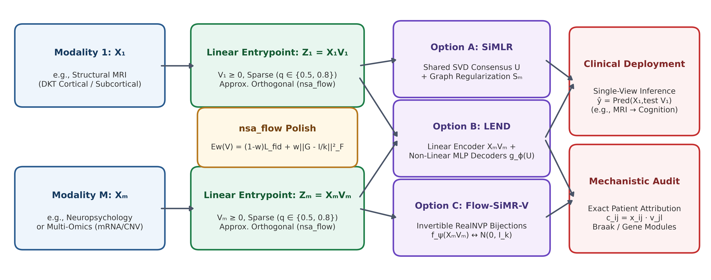

nsa_flow). Downstream alignment modules (SiMLR, LEND, or Flow-SiMR-V) couple modalities during training while preserving direct feature-to-factor interpretability at inference.
To maintain consistent notation across neuroimaging, multi-omics, and statistical learning sections, Table 2.1 defines the core symbols used throughout the manuscript.
| Term | Meaning |
|---|---|
| \(M, N, p_m, k\) | Number of views \(M \ge 2\), sample count \(N\), input dimension \(p_m\) of view \(m\), and shared latent rank \(k \ll \min_m p_m\). |
| \(\mathbf{X}_m \in \mathbb{R}^{N \times p_m}\) | Standardized data matrix for modality \(m\), centered and scaled strictly within each training fold. |
| \(\mathbf{V}_m \in \mathbb{R}_{\ge 0}^{p_m \times k}\) | Non-negative, sparse, approximately orthogonal feature-to-factor projection matrix for modality \(m\). |
| \(\mathbf{Z}_{m,\text{lin}} = \mathbf{X}_m \mathbf{V}_m\) | Linear entrypoint latent scores (\(\mathbb{R}^{N \times k}\)) mapping raw features directly onto \(k\) interpretable axes. |
| \(\mathbf{U} \in \mathbb{R}^{N \times k}\) | Shared multi-modal subject consensus embedding (SiMLR and LEND, where \(\mathbf{U}^\top \mathbf{U} = \mathbf{I}_k\)). |
| \(D(\mathbf{V}_m) \in [0, \frac{k-1}{k}]\) | Scale-invariant approximate Stiefel orthogonality and column norm-balance defect (nsa_flow). |
| \(w \in (0,1), \; q \in [0,1)\) | nsa_flow fidelity-orthogonality balance weight \(w\) and post-optimization quantile sparsity threshold \(q\). |
Let \(\{\mathbf{X}_m \in \mathbb{R}^{N \times p_m}\}_{m=1}^M\) denote \(M\) data modalities acquired on the same \(N\) subjects during training. Every architecture within the SiMR family maps each view \(m\) into a \(k\)-dimensional latent space exclusively through the linear entrypoint \(\mathbf{Z}_{m,\text{lin}} = \mathbf{X}_m \mathbf{V}_m\) while optimizing a composite objective combining cross-modal alignment \(\mathcal{L}_{\text{align}}\), within-view geometric or reconstruction preservation \(\mathcal{L}_{\text{within}}\), and manifold regularization \(\mathcal{R}(\mathbf{V}_m)\):
\[ \min_{\{\mathbf{V}_m\}_{m=1}^M, \, \Theta} \; \sum_{m=1}^M \mathcal{L}_{\text{within}}(\mathbf{X}_m, \mathbf{V}_m; \Theta) + \lambda_{\text{align}} \, \mathcal{L}_{\text{align}}\!\left(\{\mathbf{X}_m \mathbf{V}_m\}_{m=1}^M; \Theta\right) + \sum_{m=1}^M \mathcal{R}(\mathbf{V}_m) \tag{2.1}\]
Here \(\Theta\) denotes architecture-specific alignment parameters: the shared orthonormal subject basis \(\mathbf{U} \in \operatorname{St}(N, k)\) in SiMLR (Avants et al. 2021), the non-linear decoder weights \(\{\phi_m\}\) in LEND, or the invertible coupling network parameters \(\{\psi_m\}\) in Flow-SiMR-V (Dinh et al. 2017). To evaluate which mathematical components drive predictive performance and biological localization, we compare nine architectures spanning classical linear factorizations, deep multi-modal encoders, and the SiMR family (Table 2.2).
| Architecture | Input Projection \(\mathbf{V}_m\) | Cross-Modal Alignment Mechanism | Sparsity & Orthogonality Control | Exact Linear Entrypoint? |
|---|---|---|---|---|
| PCA (Hotelling 1933) | Dense \(\mathbb{R}^{p_m \times k}\) | Concatenated SVD (\(\mathbf{X}_{\text{concat}} = \mathbf{U}\boldsymbol{\Sigma}\mathbf{V}^\top\)) | Exact Stiefel (\(\mathbf{V}^\top\mathbf{V} = \mathbf{I}_k\)), \(0\%\) sparse | Yes (Dense) |
| Linear CCA (Hotelling 1936) | Dense \(\mathbb{R}^{p_m \times k}\) | Pairwise canonical correlation maximization | Unconstrained loading columns, \(0\%\) sparse | Yes (Dense) |
| Reduced-Rank Reg. (RRR) (Izenman 1975) | Dense \(\mathbb{R}^{p_m \times k}\) | Low-rank cross-view regression \(\mathbf{X}_2 \approx \mathbf{X}_1 \mathbf{B}_1 \mathbf{B}_2^\top\) | Rank-\(k\) subspace constraint, \(0\%\) sparse | Yes (Dense) |
| Deep CCA (DCCA) (Andrew et al. 2013) | Non-linear MLP \(f_{\theta_m}(\mathbf{X}_m)\) | Canonical correlation on deep hidden embeddings | None on input features | No (Black-box) |
| SiMLR (Default) (Avants et al. 2021) | Sparse \(\mathbf{V}_m \in \mathbb{R}_{\ge 0}^{p_m \times k}\) | Alternating SVD consensus \(\mathbf{U}\) + similarity graph \(\mathbf{S}_m\) | nsa_flow (\(w=0.5\), \(q=\text{None}\) soft shrinkage) |
Yes (Sparse \(\ge 0\)) |
| SiMLR (\(q=0.5\)) | Sparse \(\mathbf{V}_m \in \mathbb{R}_{\ge 0}^{p_m \times k}\) | Alternating SVD consensus \(\mathbf{U}\) + similarity graph \(\mathbf{S}_m\) | nsa_flow (\(w=0.5\), \(q=0.5\) moderate sparsity) |
Yes (Sparse \(\ge 0\)) |
| SiMLR (\(q=0.8\)) | Sparse \(\mathbf{V}_m \in \mathbb{R}_{\ge 0}^{p_m \times k}\) | Alternating SVD consensus \(\mathbf{U}\) + similarity graph \(\mathbf{S}_m\) | nsa_flow (\(w=0.5\), \(q=0.8\) focal panel) |
Yes (Sparse \(\ge 0\)) |
| LEND | Sparse \(\mathbf{V}_m \in \mathbb{R}_{\ge 0}^{p_m \times k}\) | Non-linear MLP decoders \(g_{\phi_m}(\mathbf{U}) \to \mathbf{X}_m\) | nsa_flow (\(w=0.5\)) on linear encoder \(\mathbf{V}_m\) |
Yes (Sparse \(\ge 0\)) |
| Flow-SiMR-V | Sparse \(\mathbf{V}_m \in \mathbb{R}_{\ge 0}^{p_m \times k}\) | Invertible RealNVP flows \(f_{\psi_m}(\mathbf{X}_m \mathbf{V}_m) \leftrightarrow \mathcal{N}(\mathbf{0}, \mathbf{I}_k)\) | nsa_flow (\(w=0.5\), \(q=0.5\)) + detached flow prior |
Yes (Sparse \(\ge 0\)) |

nsa_flow). Downstream alignment modules (SiMLR, LEND, or Flow-SiMR-V) couple modalities during training while preserving direct feature-to-factor interpretability at inference.
nsa_flow) and Operating PointsIn high-dimensional neuroimaging (\(p_m \sim 10^2\)–\(10^5\)) and transcriptomics (\(p_m \sim 10^4\)), updating \(\mathbf{V}_m\) along a cross-modal covariance gradient \(\mathbf{V}_{m,0} \in \mathbb{R}^{p_m \times k}\) quickly causes multiple latent components to collapse onto the dominant variance axis. Conversely, projecting \(\mathbf{V}_m\) onto the strict Stiefel manifold \(\operatorname{St}(p_m, k)\) (Edelman et al. 1998) forces exact zero inner products between columns, preventing distinct biological networks from sharing pleiotropic hub genes or transmodal association cortices (Buckner et al. 2009; Avants et al. 2021, 2025).
To provide a continuous, scale-invariant bridge between these extremes, each update of \(\mathbf{V}_m\) minimizes the dimensionless Non-Negative Stiefel Approximating Flow (nsa_flow) energy \(E_w(\mathbf{V}_m; \mathbf{V}_{m,0})\) over the non-negative orthant \(\mathbf{V}_m \ge 0\) (Avants et al. 2025; Birgin et al. 2000; Barzilai and Borwein 1988; Armijo 1966; Parikh and Boyd 2014; Bolte et al. 2014; Ablin and Peyré 2022) (Figure 2.1):
\[ E_w(\mathbf{V}_m; \mathbf{V}_{m,0}) = (1 - w) \, \mathcal{L}_{\text{fid}}(\mathbf{V}_m; \mathbf{V}_{m,0}) + w \, D(\mathbf{V}_m), \quad w \in (0, 1) \tag{2.2}\]
where the scale-normalized fidelity loss \(\mathcal{L}_{\text{fid}}\) and the trace-normalized Gram defect \(D(\mathbf{V}_m)\) are both dimensionless and \(\mathcal{O}(1)\) by construction:
\[ \mathcal{L}_{\text{fid}}(\mathbf{V}_m; \mathbf{V}_{m,0}) = \frac{\|\mathbf{V}_m - \mathbf{V}_{m,0}\|_F^2}{2 \|\mathbf{V}_{m,0}\|_F^2}, \qquad D(\mathbf{V}_m) = \left\| \mathbf{G}(\mathbf{V}_m) - \frac{1}{k}\mathbf{I}_k \right\|_F^2, \qquad \mathbf{G}(\mathbf{V}_m) = \frac{\mathbf{V}_m^\top \mathbf{V}_m}{\operatorname{tr}(\mathbf{V}_m^\top \mathbf{V}_m)} \tag{2.3}\]
The Gram defect \(D(\mathbf{V}_m)\) decomposes orthogonally into off-diagonal column correlation plus diagonal column norm imbalance:
\[ D(\mathbf{V}_m) = \sum_{l \neq r} G_{lr}^2 + \sum_{l=1}^k \left(G_{ll} - \frac{1}{k}\right)^2 \tag{2.4}\]
Minimizing \(D(\mathbf{V}_m)\) therefore prevents both duplicate factors (\(G_{lr} \to 0\) for \(l \neq r\)) and dead components (\(G_{ll} \to 1/k\)), while the Euclidean gradient \(\nabla_{\mathbf{V}_m} D(\mathbf{V}_m)\) is identically orthogonal to \(\mathbf{V}_m\) (\(\langle \nabla_{\mathbf{V}_m} D(\mathbf{V}_m), \mathbf{V}_m \rangle_F = 0\)), ensuring that orthogonality regularization never artificially inflates or shrinks matrix scale. Moreover, when features within a modality share a positive correlation floor (such as cortical thickness parcels across the brain), the leading singular vector of \(\mathbf{V}_{m,0}\) acts as a dense global mean while components \(2\dots k\) are signed contrasts; directly projecting onto \(\mathbf{V}_m \ge 0\) would leave Component 1 dense. To prevent this without altering the spanned subspace \(\operatorname{span}(\mathbf{V}_{m,0})\), nsa_flow applies an exact orthogonal Varimax rotation \(\mathbf{R}^* = \arg\max_{\mathbf{R} \in \mathrm{O}(k)} \mathcal{V}_{\text{varimax}}(\mathbf{V}_{m,0}\mathbf{R})\) (varimax=True by default in pysimlr v0.2.17) prior to non-negative retraction, distributing variance evenly across all \(k\) columns. Following gradient polish, column-wise quantile thresholding at level \(q \in [0, 1)\) zeros out entries below the \(q\)-th percentile of each column’s positive weights and normalizes columns to unit \(\ell_2\) norm. This yields two primary clinical operating points:
Holding the linear entrypoint \(\mathbf{Z}_{m,\text{lin}} = \mathbf{X}_m \mathbf{V}_m\) fixed, SiMR provides three alignment topologies tailored to different cross-modal relationships:
SiMLR): Alternates between updating \(\mathbf{V}_m\) via cross-modal covariance projection \(\mathbf{V}_{m,0} = \mathbf{X}_m^\top \mathbf{S}_m \mathbf{U}\) followed by nsa_flow polish (L-BFGS-B (Byrd et al. 1995; Nocedal and Wright 2006) or Lookahead (Zhang et al. 2019)), and updating the shared subject basis \(\mathbf{U} = \operatorname{polar}\!\left(\sum_{m=1}^M \tilde{\mathbf{Z}}_m\right)\) via exact Sylvester-differentiable polar decomposition (Higham 2008; Avants et al. 2021).LEND): Replaces the linear reconstruction model with modality-specific multilayer perceptron decoders \(g_{\phi_m} : \mathbb{R}^k \to \mathbb{R}^{p_m}\) trained to reconstruct \(\mathbf{X}_m\) from \(\mathbf{U}\) while penalizing encoder-consensus divergence \(\gamma \|\mathbf{X}_m \mathbf{V}_m - \mathbf{U}\|_F^2\). Because non-linearity is restricted to the generative decoders \(g_{\phi_m}\), out-of-sample inference \(\mathbf{Z}_{m,\text{lin}} = \mathbf{X}_{m,\text{test}} \mathbf{V}_m\) remains strictly linear and auditable.Flow-SiMR-V): Routes each linear projection \(\mathbf{Z}_{m,\text{lin}} = \mathbf{X}_m \mathbf{V}_m\) through a volume-preserving RealNVP flow \(f_{\psi_m} : \mathbb{R}^k \to \mathbb{R}^k\) (Dinh et al. 2017; Papamakarios et al. 2021) toward an isotropic Gaussian prior. To prevent the single-modality density term from pulling \(\mathbf{V}_m\) toward high-variance noise directions, gradients from the Gaussian prior are detached before reaching \(\mathbf{V}_m\) (proved in Appendix C), ensuring that \(\mathbf{V}_m\) updates exclusively along cross-modal flow agreement:\[ \mathcal{L}_{\text{Flow-SiMR-V}} = \sum_{m=1}^M \frac{1}{2N} \left\| f_{\psi_m}\!\left(\operatorname{sg}(\mathbf{X}_m \mathbf{V}_m)\right) \right\|_F^2 + \lambda_{\text{align}} \sum_{m < m'} \frac{1}{N} \left\| f_{\psi_m}(\mathbf{X}_m \mathbf{V}_m) - f_{\psi_{m'}}(\mathbf{X}_{m'} \mathbf{V}_{m'}) \right\|_F^2 \tag{2.5}\]
A critical distinction in clinical translation is which data views are available when evaluating a new patient (Stone 1974):
ADNI-MCI): During training, the algorithm aligns structural MRI (\(\mathbf{X}_1 \in \mathbb{R}^{N \times 62}\), DKT cortical thickness and subcortical volumes (Desikan et al. 2006; Klein and Tourville 2012; Tustison et al. 2014, 2010; Avants et al. 2011, 2014)) with an 11-scale neuropsychological battery (\(\mathbf{X}_2 \in \mathbb{R}^{N \times 11}\)). At test time, cognitive test scores \(\mathbf{X}_{2,\text{test}}\) are completely withheld; predictions of composite cognitive status (CogPC1) and individual clinical scales are generated solely from the patient’s baseline structural MRI scan via \(\mathbf{Z}_{1,\text{test}} = \mathbf{X}_{1,\text{test}} \mathbf{V}_1\). This protocol tests whether supervising anatomical representation learning with multidimensional cognitive batteries during training extracts a more clinically informative neuroanatomical basis than unsupervised MRI decomposition.